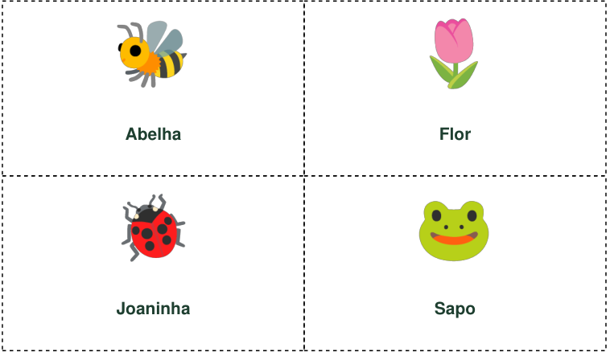

Linguagem · 4+ anosBaixar PDF ↓
Bingo do quintal
Descubra o quintal, uma figura por vez.
Como brincar
Objetivo — Nomear figuras e relacionar a palavra ouvida à imagem.
Entregue uma cartela a cada jogador. Recorte as peças da última folha e sorteie uma por vez. Diga o nome em voz alta. Quem tiver a figura cobre a casa com um pedacinho de papel. Ganha quem completar a cartela.